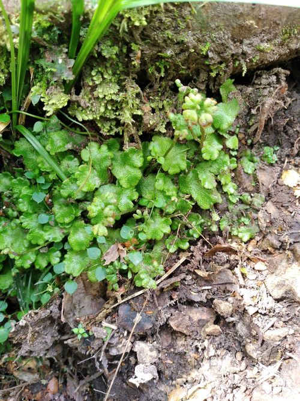

Noterocladaceae
No widely accepted common name (sometimes associated with "Smooth Hornwort" for Noteroclada)
Noterocladaceae is a family of simple thalloid liverworts, typically placed in the order Pelliales. It is often considered monogeneric, containing only Noteroclada. These liverworts are characterized by their relatively large, fleshy, simple thalli lacking internal differentiation like air chambers, and typically grow in very wet habitats, primarily in the Southern Hemisphere.
Overview
The Noterocladaceae family, primarily represented by the genus Noteroclada, belongs to the simple thalloid liverworts (order Pelliales). Unlike the complex thalloids (Marchantiales), their thalli lack internal air chambers and pores, consisting of relatively uniform parenchyma tissue. Noteroclada species are typically found in consistently wet environments, such as stream banks, seepages, bogs, and wet forests, often forming extensive, fleshy mats.
The family has a predominantly Southern Hemisphere distribution, occurring in temperate and cool regions of South America, Australasia, and some subantarctic islands. The thalli are often large, succulent, and somewhat resemble those of the related genus Pellia, but differ in reproductive details and other subtle morphological features. Their study contributes to understanding the diversity and evolution of simple thalloid liverworts.
Quick Facts
- Scientific Name: Noterocladaceae L.Söderstr. & Váňa
- Common Name: (None widely used)
- Number of Genera: 1 (Noteroclada)
- Number of Species: Approximately 1-2 (e.g., Noteroclada confluens)
- Distribution: Primarily Southern Hemisphere (South America, New Zealand, Australia, subantarctic islands), favouring very wet habitats.
- Evolutionary Group: Bryophytes - Liverworts (Marchantiophyta) - Pelliopsida - Pelliales
Key Characteristics
Note: As simple thalloid liverworts, Noterocladaceae differ significantly from the complex thalloid families described previously.
Gametophyte (Thallus) Structure
The dominant phase is the simple thallus:
- Form: Relatively large, prostrate, strap-shaped to irregularly lobed, often with somewhat ruffled or undulating margins. Branching is irregular or sparingly dichotomous.
- Texture & Colour: Distinctly fleshy and succulent, often somewhat translucent, typically bright green to yellowish-green.
- Internal Structure: Simple and undifferentiated. Lacks the air chambers, pores, and distinct epidermal/storage layers seen in complex thalloids. Consists mainly of uniform parenchyma cells. May have a thickened central midrib or be uniformly thick.
- Mucilage Papillae: Often present, especially near the apex or margins, secreting protective mucilage.
- Rhizoids: Numerous, simple, smooth rhizoids arise from the ventral surface, anchoring the thallus.
- Ventral Scales: Absent.
Reproductive Structures
Species are typically dioicous (separate male and female plants).
- Antheridia: Male organs are usually sunken in pits or chambers, often clustered in distinct patches or scattered along the dorsal midline of male thalli, sometimes appearing as small bumps.
- Archegonia: Female organs occur in clusters on the dorsal surface, typically along the midline. They are protected by a distinctive involucre, which in Noteroclada is often a fleshy, scale-like flap or sheath that arches over the archegonia and later the base of the developing sporophyte.
Sporophyte
The sporophyte develops after fertilization and shows features typical of Pelliales:
- Foot: Bulbous, embedded in the thallus tissue beneath the involucre.
- Seta: Initially short, but elongates rapidly and significantly at maturity, becoming long, pale, and delicate, raising the capsule well above the thallus.
- Capsule: Globose to ovoid, typically dark brown or black when mature. The capsule wall consists of multiple cell layers.
- Dehiscence: The capsule typically splits open longitudinally into four distinct valves to release spores.
- Protection: The developing sporophyte is initially protected by the flap-like involucre and the calyptra (enlarged archegonium wall).
Spores and Elaters
Contained within the capsule.
- Spores: Typically unicellular, relatively small, spherical to ovoid, with varied surface ornamentation.
- Elaters: Present, long and slender cells with 2-4 spiral thickenings, mixed among the spores. They aid in spore dispersal through hygroscopic movements. Some elaters may remain attached to the capsule base or valves (elaterophore).
Field Identification
Identifying Noterocladaceae (Noteroclada) requires recognizing its simple thalloid structure, fleshy texture, wet habitat, and characteristic reproductive features.
Primary Identification Features
- Simple Thallus Structure: Large, fleshy, green thallus lacking any visible pores or internal air chambers on the dorsal surface.
- Habitat: Found in very wet places – edges of streams, seepages, bogs, often partially submerged or on saturated soil.
- Fleshy/Succulent Texture: Thallus feels thick and soft compared to many other liverworts.
- Archegonial Involucre: Look for a distinctive, fleshy, scale-like flap or sheath on the dorsal surface protecting the archegonia or the base of the sporophyte.
- Long Seta: Mature sporophytes are elevated on a long, delicate, whitish seta.
- Capsule Dehiscence: Mature capsules split into four distinct valves.
Secondary Identification Features
- Ruffled Margins: Thallus edges are often wavy or undulating.
- Antheridial Patches: Male plants may show dorsal patches of sunken antheridia.
- Southern Hemisphere Distribution: Primarily found in cool, wet temperate regions south of the equator.
Seasonal Identification Tips
- Year-round (in perennially wet habitats): Growth occurs whenever conditions are suitable.
- Wet Season: Thalli are most turgid and conspicuous. Sporophytes typically mature and elongate during wetter periods.
Common Confusion Points
Noteroclada might be confused with:
- Pellia (Pelliaceae): Very similar simple, fleshy thalli found in wet habitats. Pellia often has less ruffled margins, and its involucre protecting the archegonia is typically a short, tubular flap or collar at the apex of a notch, rather than a dorsal scale. Sporophyte details also differ slightly (e.g., elaterophore structure).
- Aneura / Riccardia (Aneuraceae): Other simple thalloids, but often less fleshy, more pinnately branched, and with different reproductive structures (archegonia/antheridia often on short specialized branches, different involucres or none).
- Hornworts (Anthocerotophyta): Hornwort gametophytes can be simple rosettes or strap-like thalli, but they have a different cell structure (usually one large chloroplast per cell) and a very different sporophyte (a long, horn-like structure that grows continuously from the base and splits longitudinally, lacking a distinct seta and capsule).
- Complex Thalloids (Marchantiales): Easily distinguished by the presence of air pores and chambers in complex thalloids, which are absent in Noteroclada.
Key differentiator: Look for the combination of a large, fleshy, simple thallus in a very wet habitat, the characteristic dorsal scale-like involucre, and the long seta elevating the 4-valved capsule.
Field Guide Quick Reference
Look For:
- Large, fleshy, simple green thallus
- Very wet habitat (stream banks, seepages)
- No visible pores/chambers
- Dorsal scale-like involucre
- Sporophyte on long, pale seta
- Capsule splitting into 4 valves
Key Distinctions:
- Simple thallus (unlike Marchantiales)
- Fleshy texture (unlike many Metzgeriales)
- Involucre is dorsal scale (unlike apical flap of Pellia)
- Sporophyte has long seta (unlike Marchantiales with sessile/short seta)
- Sporophyte is capsule on seta (unlike horn-like sporophyte of hornworts)
Notable Examples
The family is generally considered monogeneric.

Noteroclada confluens
(Smooth Hornwort - misnomer, sometimes used)
The primary, widespread species representing the family. Found across the Southern Hemisphere in suitable wet habitats. Exhibits the characteristic large, fleshy, simple thallus, dorsal scale-like involucre, and sporophytes elevated on long setae. Forms extensive mats along stream edges and seepages.
Phylogeny and Classification
Noterocladaceae is placed within the order Pelliales, a group of relatively basal simple thalloid liverworts. Its exact position within the order has varied, but molecular studies often place it sister to or near Pelliaceae. Both families share features like a large, fleshy thallus and a sporophyte with a long seta and a 4-valved capsule, but differ in the nature of the involucre and other details.
The Pelliales represent an early diverging lineage within the liverworts, showcasing a simpler level of thallus organization compared to the complex thalloids (Marchantiales) or the leafy liverworts (Jungermanniales). Studying families like Noterocladaceae helps illuminate the evolutionary history and diversification of liverwort body plans.
Position in Plant Phylogeny
- Kingdom: Plantae
- Division: Marchantiophyta (Liverworts)
- Class: Pelliopsida
- Order: Pelliales
- Family: Noterocladaceae
Evolutionary Significance
Noterocladaceae is significant for understanding:
- Simple Thalloid Evolution: Represents a lineage retaining a relatively simple, undifferentiated thallus structure compared to the complex thalloids.
- Basal Liverwort Relationships: Its position within Pelliales contributes to understanding early divergences within the Marchantiophyta.
- Adaptation to Wet Environments: Showcases morphology suited to constantly saturated conditions.
- Biogeography: Its Southern Hemisphere distribution pattern is of interest in historical biogeography.